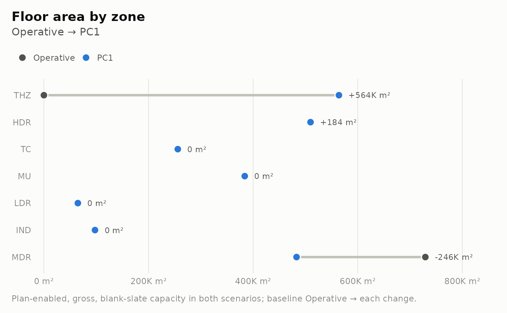
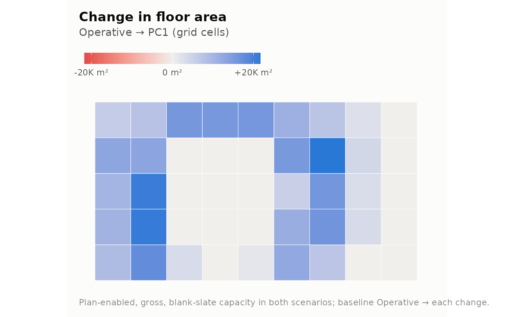
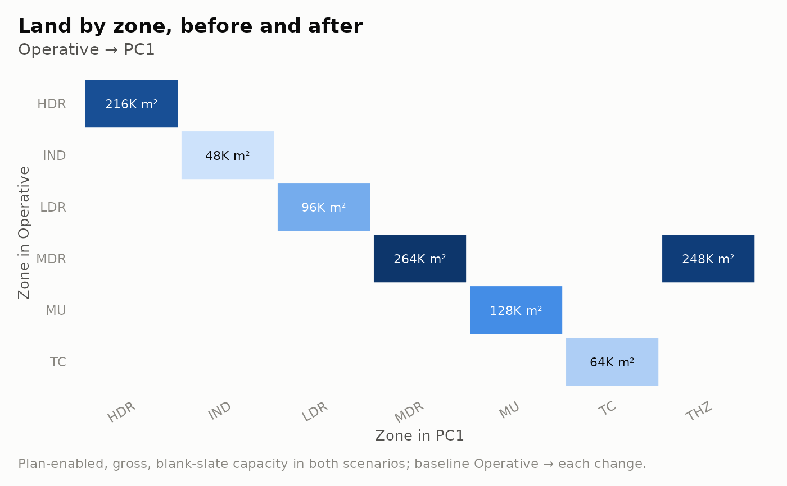
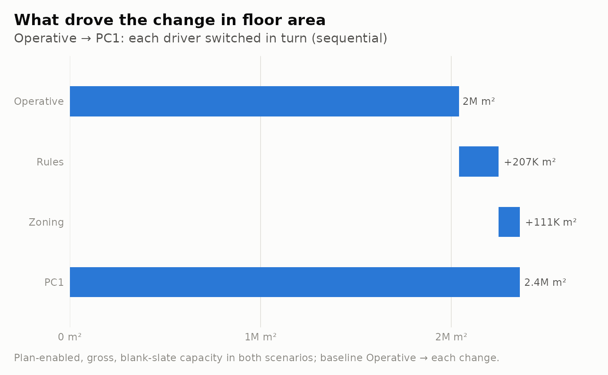

plot_comparison(): each zone (or height band, area or grid cell) in the baseline and the scenario, as a dumbbell from one to the other, or as bars of the change;plot_change_map(): where capacity rises and falls, on sites or grid cells, in a diverging scale;plot_transitions(): the land (or capacity) moving from each baseline zone to each scenario zone, as a matrix;plot_attribution(): a waterfall from the baseline total, through each driver of the change, to the scenario total.
Usage
plot_comparison(
cmp,
by = "zone",
measure = "floor_area",
type = c("dumbbell", "bars"),
pair = 1,
top = 15,
mode = "light"
)
plot_change_map(
cmp,
measure = "floor_area",
on = c("sites", "grid"),
pair = 1,
mode = "light",
basemap = FALSE
)
plot_transitions(
cmp,
measure = "land_area",
changed_only = FALSE,
pair = 1,
mode = "light"
)
plot_attribution(
cmp,
measure = "floor_area",
by_rule = FALSE,
pair = 1,
mode = "light"
)Arguments
- cmp
A comparison from
compare_scenarios().- by
"zone","height","area"or"grid"(the last two need the comparison run withareasorgrid).- measure
The measure.
- type
"dumbbell"or"bars".- pair
Which pair of the comparison (a name or number).
- top
Show at most this many groups, the largest changes.
- mode
"light"or"dark".- on
"sites"or"grid"(the comparison's grid).- basemap
Whether to draw a basemap (see
plot_capacity_map()).- changed_only
Whether to leave out land that kept its zone.
- by_rule
Whether to split the rules driver by rule, where the comparison has that split.
Examples
# \donttest{
town <- exampleton()
pc1 <- exampleton_pc1()
base <- scenario("Operative", rulebook_example("exampleton"),
parcels = town$parcels[town$parcels$parcel_type == "land", ],
roads = town$parcels[town$parcels$parcel_type == "road", ],
zoning = town$zoning, layers = town[c("height_areas", "flood_hazard", "transit")])
change <- scenario_change(base, "PC1", rulebook = pc1$rulebook, zoning = pc1$zoning)
cmp <- compare_scenarios(run_scenarios(scenario_set(base, change)), grid = 200)
#> Operative: 4 s.
#> PC1: 3.4 s, 575 sites copied from the baseline.
plot_comparison(cmp)

plot_change_map(cmp, on = "grid")

plot_transitions(cmp)

plot_attribution(cmp)

# }